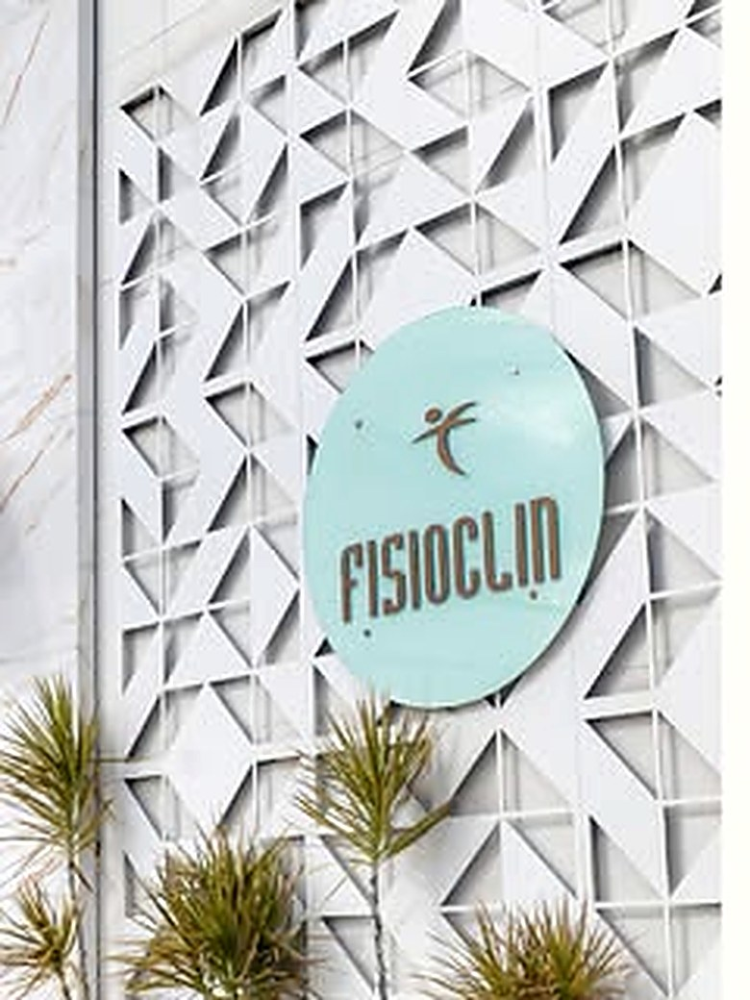

Fisioterapia
Reabilitação de dores, lesões e limitações de movimento, com plano montado a partir da avaliação.
Fisioterapia, Pilates, Psicologia, Fonoaudiologia, Nutrição e Terapia Ocupacional para crianças, adultos e idosos — atendimento particular e por planos de saúde.
É o que faz diferença quando um cuidado puxa o outro: a criança que está em fonoaudiologia não precisa de outra clínica para a psicologia.
Reabilitação de dores, lesões e limitações de movimento, com plano montado a partir da avaliação.
Trabalho de força, postura e consciência corporal em turmas acompanhadas de perto.
Acompanhamento para adultos e também psicologia infantil, em consultórios reservados.
Fala, linguagem, voz e deglutição — com atendimento infantil entre as especialidades da casa.
Orientação alimentar montada para a rotina de quem procura, sem dieta de prateleira.
Autonomia nas tarefas do dia a dia — para crianças, adultos e pessoas idosas.
Responda duas coisas e a parede mostra em qual especialidade esse cuidado costuma começar aqui.

A estrutura é o que permite juntar tantas especialidades no mesmo endereço sem ninguém esperar em pé no corredor.
Mande uma mensagem contando para quem é o atendimento e qual especialidade você procura. A recepção confirma o horário disponível e, se você tiver plano de saúde, verifica a cobertura.